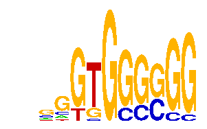

family_9 |
|---|
|  |
| Download PWM |
| Download instances (motifs) |
| Show motif distribution |
Query_ID | Query_Consensus | Subject_Name | Source_DB | Subject_ID | Length | Orientation | Offset | Divergence | Overlap | Subject_Consensus |
|---|---|---|---|---|---|---|---|---|---|---|
| family_9 | NGGTGGGGGG | GLIS1 | HOCOMOCO | GLIS1_HUMAN.H10MO.D | 13 | as given | 0 | 0.794 | 10 | TCGTGGGGGGTCN |
| family_9 | NGGTGGGGGG | SP4 | HOCOMOCO | SP4_HUMAN.H10MO.D | 22 | as given | 5 | 0.832 | 5 | GGGGGCGGGGCCNGGGSGGGGS |
Sequence | Start_position (from start) | Start_position (from end) | Average conservation | Best conservation score | Instance_with_best_CS | Best_Z-score | Instance_with_best_ZS | Strand |
|---|---|---|---|---|---|---|---|---|
| chr5:24348576-24349576 | 125 | 135 | 0.2233 | 0.794 | .GGTGSSGGG | 13.893304 | .GGTGSSGGG | 1 |
| chr15:36538708-36539708 | 275 | 285 | 0.0044 | 0.012 | ..GTGSGSGG | 13.934117 | ..GTGSGCSG | 1 |
| chr17:24566035-24567035 | 661 | 671 | 0.0311 | 0.035 | ..GTGSGCSG | 13.900206 | ..GTGSGSGG | -1 |
| chr6:51420374-51421374 | 237 | 247 | 0.0037 | 0.013 | ..GTGSGSGG | 14.065225 | ..GTGGGCSG | 1 |
| chr5:24348576-24349576 | 82 | 92 | 0.4578 | 0.597 | .GTGGGCSGS | 14.39867 | .GTGGGCSGS | 1 |
| chr6:51420374-51421374 | 452 | 462 | 0.6439 | 0.992 | .GTGGGCSGS | 14.39867 | .GTGGGCSGS | 1 |
| chr4:107518583-107519583 | 267 | 277 | 0.9916 | 1 | ..GTGSGSGG | 13.900206 | ..GTGSGSGG | -1 |
| chr9:78327014-78328014 | 303 | 313 | 0.9978 | 1 | ..GTGGGCSG | 13.934117 | ..GTGSGCSG | -1 |
| chr13:34225188-34226188 | 500 | 510 | 0.0011 | 0.007 | ..GTGSGSGG | 13.893304 | .GGTGSSGGG | 1 |
| chr11:88006704-88007704 | 461 | 471 | 0.0049 | 0.023 | ..GTGSGSGG | 15.160328 | .GGTGSGSGG | 1 |
| chr7:4470526-4471526 | 594 | 604 | 0.9598 | 1 | .GTGGGCSGS | 14.39867 | .GTGGGCSGS | 1 |
| chr5:115964921-115965921 | 469 | 479 | 0.0021 | 0.004 | GGGYGGGSGG | 15.160328 | .GGTGSGSGG | 1 |
| chr7:4470526-4471526 | 593 | 603 | 0.9465 | 1 | ..GTGGGCSG | 13.934117 | ..GTGSGCSG | 1 |
| chr5:31208244-31209244 | 260 | 270 | 0.9991 | 1 | ..GTGSGSGG | 13.900206 | ..GTGSGSGG | -1 |
| chr11:87982958-87983958 | 510 | 520 | 0.9998 | 1 | ..GTGSGCSG | 13.934117 | ..GTGSGCSG | 1 |
| chr19:43594664-43595664 | 665 | 675 | 0.0052 | 0.007 | ..GTGSGSGG | 13.900206 | ..GTGSGSGG | 1 |
| chr4:134722044-134723044 | 503 | 513 | 0.9993 | 1 | .GGTGSSGGG | 13.893304 | .GGTGSSGGG | -1 |
| chr15:36538708-36539708 | 276 | 286 | 0.0043 | 0.012 | .GTGGGCSGS | 14.39867 | .GTGGGCSGS | 1 |
| chr15:36538708-36539708 | 473 | 483 | 0 | 0 | .GGTGSSGGG | 13.893304 | .GGTGSSGGG | -1 |
| chr4:137032204-137033204 | 195 | 205 | 0.4262 | 0.662 | .GGTGSSGGG | 13.900206 | ..GTGSGSGG | 1 |
| chr5:24348576-24349576 | 81 | 91 | 0.4001 | 0.597 | GGGYGGGSGG | 14.065225 | ..GTGGGCSG | 1 |
| chr1:174173759-174174759 | 339 | 349 | 0.0019 | 0.008 | ..GTGSGSGG | 13.900206 | ..GTGSGSGG | -1 |
| chr10:79537530-79538530 | 493 | 503 | 0.0168 | 0.055 | .GGTGSSGGG | 13.900206 | ..GTGSGSGG | 1 |
| chr1:137733305-137734305 | 376 | 386 | 0.0011 | 0.003 | ..GTGSGSGG | 13.893304 | .GGTGSSGGG | 1 |
| chr19:7256653-7257653 | 359 | 369 | 0.1675 | 0.271 | ..GTGSGSGG | 13.893304 | .GGTGSSGGG | 1 |
| chr10:120332764-120333764 | 544 | 554 | 0.2599 | 0.309 | .GTGGGCSGS | 14.39867 | .GTGGGCSGS | 1 |
| chr4:129472154-129473154 | 690 | 700 | 0.0085 | 0.02 | .GGTGSGSGG | 13.92322 | GGGYGGGSGG | 1 |
| chr13:13530453-13531453 | 492 | 502 | 0.0429 | 0.093 | ..GTGSGSGG | 13.900206 | ..GTGSGSGG | 1 |
| chr13:114670382-114671382 | 1001 | 1011 | 0.3228 | 0.906 | ..GTGSGSGG | 13.934117 | ..GTGSGCSG | 1 |
| chr1:174173759-174174759 | 374 | 384 | 0.0007 | 0.002 | .GGTGSSGGG | 13.893304 | .GGTGSSGGG | -1 |
| chr6:124869568-124870568 | 394 | 404 | 0.9966 | 1 | ..GTGSGSGG | 13.900206 | ..GTGSGSGG | -1 |
| chr10:79537530-79538530 | 778 | 788 | 0.0156 | 0.089 | ..GTGSGCSG | 13.934117 | ..GTGSGCSG | -1 |
| chr19:47829769-47830769 | 637 | 647 | 0.0019 | 0.004 | ..GTGSGCSG | 13.934117 | ..GTGSGCSG | 1 |
| chr1:10029535-10030535 | 302 | 312 | 0.001 | 0.003 | GGGYGGGSGG | 13.92322 | GGGYGGGSGG | 1 |
| chr10:120332764-120333764 | 543 | 553 | 0.2722 | 0.309 | ..GTGSGCSG | 13.900206 | ..GTGSGSGG | 1 |
| chr13:114670382-114671382 | 1005 | 1015 | 0.0493 | 0.143 | GGGYGGGSGG | 13.92322 | GGGYGGGSGG | 1 |
| chr7:150644976-150645976 | 673 | 683 | 0.9984 | 0.999 | ..GTGSGSGG | 13.900206 | ..GTGSGSGG | 1 |
| chr15:36538708-36539708 | 501 | 511 | 0.0059 | 0.022 | GGGYGGGSGG | 15.160328 | .GGTGSGSGG | 1 |
| chr8:73986941-73987941 | 515 | 525 | 0.5526 | 0.975 | .GGTGSGSGG | 13.900206 | ..GTGSGSGG | 1 |
| chr15:100446141-100447141 | 247 | 257 | 0.0312 | 0.075 | GGGYGGGSGG | 15.160328 | .GGTGSGSGG | 1 |
| chr8:73986941-73987941 | 357 | 367 | 0.0031 | 0.006 | GGGYGGGSGG | 13.92322 | GGGYGGGSGG | -1 |
| chr8:73986941-73987941 | 620 | 630 | 0.0834 | 0.141 | .GTGGGCSGS | 14.39867 | .GTGGGCSGS | 1 |
| chr8:73986941-73987941 | 619 | 629 | 0.0774 | 0.141 | ..GTGSGCSG | 14.065225 | ..GTGGGCSG | 1 |
| chr13:114670382-114671382 | 1002 | 1012 | 0.2348 | 0.869 | .GTGGGCSGS | 14.39867 | .GTGGGCSGS | 1 |
| chr16:38362422-38363422 | 856 | 866 | 0.0045 | 0.014 | ..GTGSGSGG | 15.160328 | .GGTGSGSGG | -1 |
| chr11:87982958-87983958 | 415 | 425 | 0.7333 | 0.999 | .GGTGSSGGG | 13.893304 | .GGTGSSGGG | 1 |
| chr7:134170729-134171729 | 157 | 167 | 0.9664 | 0.997 | ..GTGSGSGG | 13.900206 | ..GTGSGSGG | -1 |
| chr6:47697996-47698996 | 383 | 393 | NA | NA | .GGTGSSGGG | 13.893304 | .GGTGSSGGG | 1 |